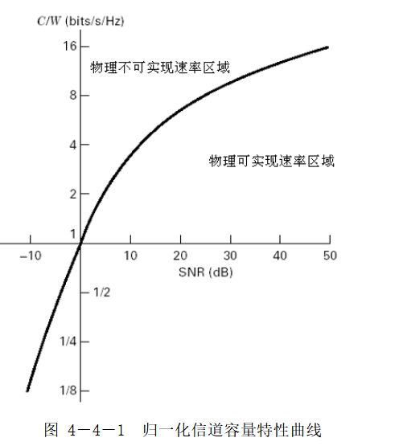
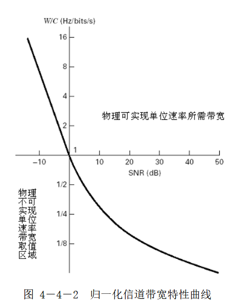
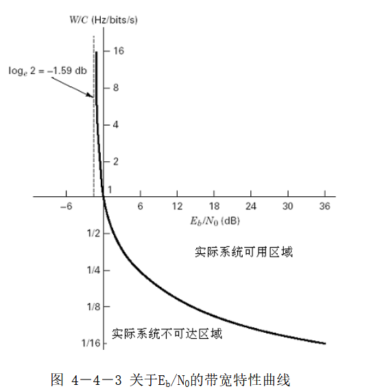

🌟 欢迎来到第3讲！—— 连续信源、信道及容量 #
本讲基于《数字通信原理》（冯穗力等编著，电子工业出版社2023年版）第四章第4节内容，聚焦连续信源的信息度量（相对熵、互信息量）、相对熵最大化条件，以及核心的加性白高斯噪声（AWGN）信道容量计算与归一化分析，最终推导并解读香农信道容量定理。
📝 本讲主要内容 #
- 连续信源的相对熵（定义、与绝对熵的区别）
- 连续信源的相对条件熵与互信息量（公式推导、物理意义）
- 连续信源相对熵最大化（三种约束条件下的最优分布与最大相对熵）
- 加性白高斯噪声（AWGN）信道的容量计算（香农公式推导）
- 信道容量与带宽的归一化分析（单位频带速率、单位速率带宽、香农极限）
🔍 相关缩写 #
| 缩写 | 英文全称 | 中文含义 |
|---|---|---|
| AWGN | Additive White Gaussian Noise | 加性白高斯噪声（信道） |
| SNR | Signal-to-Noise Ratio | 信噪比 |
| $E\_b/N\_0$ | Energy per bit to Noise Power Spectral Density Ratio | 比特能量与噪声功率密度比 |
| W | Bandwidth | 带宽（单位：Hz） |
| C | Channel Capacity | 信道容量（单位：bits/s） |
📚 4.4 连续信源、信道及容量（对应PPT第4.4节） #
离散信源仅适用于抽象符号判决场景，实际物理信道（如无线信道、有线信道）均为连续信道，需通过概率密度函数描述信号幅度分布，进而定义连续信源的信息度量。
4.4.1 连续信源的相对熵（对应PPT第4.4.1小节） #
连续信源的幅度取值是无限连续的，直接沿用离散信源熵的定义会出现"无穷大"问题，因此引入相对熵作为实用的信息度量指标。
1. 从离散信源熵到连续信源熵的过渡 #
（1）连续信号离散化 #
设连续随机信号$X(t)$的幅度范围为$[a\_X, b\_X]$，概率密度函数为$p(x)$：
- 将幅度区间划分为$n$个等宽小区间，每个区间宽度$\Delta x\_i = \Delta = \frac{b\_X - a\_X}{n}$；
- 第$i$个区间$[a\_X + (i-1)\Delta, a\_X + i\Delta]$内的概率近似为：
$P(x\_i) \approx p(x\_i) \cdot \Delta$（积分中值定理，$x\_i$为区间内任意点）。
（2）离散信源熵的极限 #
离散化后的信源$X\_n$的熵为：
$H(X\_n) = -\sum\_{i=1}^n P(x\_i) \log P(x\_i) = -\sum\_{i=1}^n p(x\_i)\Delta \cdot \log\left[p(x\_i)\Delta\right]$
当$\Delta \to 0$、$n \to \infty$时，求极限得连续信源的绝对熵：
$$\begin{aligned} H(X) &= \lim_{\Delta \to 0, n \to \infty} H(X_n) \\ &= -\int_{a_X}^{b_X} p(x)\log p(x)dx + \lim_{\Delta \to 0} \log \frac{1}{\Delta} \end{aligned}$$由于$\lim\_{\Delta \to 0} \log \frac{1}{\Delta} \to \infty$，绝对熵无实际意义。
2. 相对熵的定义 #
为规避无穷大项，定义相对熵（又称微分熵）为绝对熵中的有限部分：
定义4.4.1：$h(X) = -\int\_{a}^{b} p(x) \log p(x) dx$
⚠️ 关键结论：相对熵仅反映连续信源各取值间的"相对信息差异"，不具备"平均信息量"的内涵（与离散信源熵的核心区别）。
4.4.2 连续信源的相对条件熵和互信息量（对应PPT第4.4.2小节） #
类比离散信源，定义连续信源的条件熵与互信息量，消除无穷大项后得到实用公式。
1. 相对条件熵 #
对于两个连续随机变量$X$（信源）和$Y$（观测），其联合概率密度为$p(xy)$，条件概率密度为$p(x/y)$：
- 原始条件熵$H(X/Y)$同样包含无穷大项；
- 定义相对条件熵为有限部分：
$h(X/Y) = -\int\_{a\_X}^{b\_X} \int\_{a\_Y}^{b\_Y} p(xy) \log p(x/y) dxdy$
可进一步化简为：
$h(X/Y) = -\int\_{a\_Y}^{b\_Y} p(y) \left[ \int\_{a\_X}^{b\_X} p(x/y) \log p(x/y) dx \right] dy$
（先对$X$积分，再对$Y$的概率加权）
2. 连续信源的互信息量 #
连续信源的互信息量定义为"相对熵与相对条件熵的差值"，与离散信源互信息量的物理意义一致（观测$Y$后获得的关于$X$的平均信息量）：
- 核心公式：$\boxed{I(X;Y) = h(X) - h(X/Y)}$
- 等价形式（对称性）：
$I(X;Y) = h(Y) - h(Y/X)$
$I(X;Y) = h(X) + h(Y) - h(XY)$（$h(XY)$为相对联合熵）
✅ 优势：互信息量消除了相对熵中的"相对"属性，是绝对的信息度量指标，单位为bits。
4.4.3 连续信源相对熵的最大化（对应PPT第4.4.3小节） #
相对熵$h(X)$的取值依赖于信源的概率密度函数$p(x)$，在不同约束条件（如峰值功率、均值、平均功率）下，存在唯一的最优分布使$h(X)$最大（定理4.4.3：相对熵是$p(x)$的凹函数）。
三种典型约束条件下的最优分布 #
| 约束条件 | 最优概率密度分布 | 最大相对熵$h\_{\text{max}}(X)$ | 关键结论 |
|---|---|---|---|
| 1. 峰值功率受限 | 均匀分布： $p(x) = \frac{1}{2A}$（$x\leq A$） |
$h\_{\text{max}}(X) = \log(2A)$ | 幅度范围固定时，均匀分布的"不确定性"最大 |
| 2. 均值受限（$E[X] = a$） | 指数分布： $p(x) = \begin{cases} \frac{1}{a}e^{-x/a} & x>0 \\\ 0 & x \leq 0 \end{cases}$ |
$h\_{\text{max}}(X) = \log(ae)$ | 非负信号均值固定时，指数分布最优 |
| 3. 平均功率受限（$E[X^2] = \sigma^2$） | 高斯分布： $p(x) = \frac{1}{\sqrt{2\pi}\sigma}e^{-\frac{(x-\mu)^2}{2\sigma^2}}$（$\mu$为均值） |
$h\_{\text{max}}(X) = \frac{1}{2}\log(2\pi e\sigma^2)$ | 平均功率固定时，高斯分布的"不确定性"最大（核心结论，为AWGN信道容量推导奠定基础） |
🔢 推导工具：通过拉格朗日乘数法构建泛函（含约束条件的积分函数），求解极值得到最优分布。
4.4.4 加性白高斯噪声信道的容量（对应PPT第4.4.4小节） #
加性白高斯噪声（AWGN）信道是最基础的物理信道模型（如无线通信中的热噪声信道），其容量是通信系统设计的"理论上限"。
1. AWGN信道模型 #
- 输入：信源信号$X$（平均功率$S = \sigma\_x^2$）；
- 噪声：白高斯噪声$N$（均值为0，功率$N = \sigma\_n^2$，与$X$统计独立）；
- 输出：$Y = X + N$（加性模型）；
- 带宽约束：信道带宽为$W$（Hz），最大传输频率为$W$，根据奈奎斯特抽样定理，无失真抽样频率$f\_S = 2W$。
2. 信息速率与信道容量的定义 #
- 信息速率$R\_b$：单位时间内传输的互信息量，$R\_b = I(X;Y) \cdot f\_S = 2W \cdot I(X;Y)$（单位：bits/s）；
- 信道容量$C$：信源概率密度$p(x)$最优时的最大信息速率，即：
$C = \max\_{p(x)} R\_b = \max\_{p(x)} \left[ 2W \cdot I(X;Y) \right]$
3. 香农公式的推导 #
步骤1：简化$I(X;Y)$ #
由互信息量公式$I(X;Y) = h(Y) - h(Y/X)$，关键化简$h(Y/X)$：
- 因$Y = X + N$且$X$与$N$独立，条件概率密度$p(y/x) = p(n)$（给定$X=x$时，$Y$的分布等同于$N$的分布）；
- 相对条件熵$h(Y/X) = h(N)$（仅与噪声分布有关，与信源无关）。
因此：$I(X;Y) = h(Y) - h(N)$。
步骤2：最大化$h(Y)$ #
- $Y = X + N$，$X$为平均功率受限信源（$S = \sigma\_x^2$），$N$为高斯噪声（$N = \sigma\_n^2$）；
- 根据4.4.3节结论，高斯信源的相对熵最大，且"高斯变量之和仍为高斯变量"，故$Y$的最优分布为高斯分布，功率$\sigma\_y^2 = \sigma\_x^2 + \sigma\_n^2 = S + N$；
- 高斯分布$Y$的相对熵：$h(Y) = \frac{1}{2}\log(2\pi e(S + N))$；
- 噪声$N$的相对熵：$h(N) = \frac{1}{2}\log(2\pi eN)$。
步骤3：推导香农公式 #
将$h(Y)$和$h(N)$代入信道容量公式：
$$\begin{aligned} C &= 2W \cdot \max_{p(x)} \left[ h(Y) - h(N) \right] \\ &= 2W \cdot \left[ \frac{1}{2}\log\left(\frac{2\pi e(S+N)}{2\pi eN}\right) \right] \\ &= W \log_2\left(1 + \frac{S}{N}\right) \end{aligned}$$香农公式（香农信道容量定理）：$\boxed{C = W \log\_2(1 + \text{SNR})}$
（$\text{SNR} = \frac{S}{N}$为信噪比，无单位；$C$单位：bits/s，$W$单位：Hz）
4. 香农公式的核心结论 #
- 信道容量$C$随$\text{SNR}$增大而对数增长（$\text{SNR}$翻倍时，$C$增长缓慢，需通过带宽或编码提升容量）；
- $C$固定时，带宽$W$与$\text{SNR}$可互换（带宽不足时可通过提高$\text{SNR}$补偿，反之亦然）；
- 无噪声信道（$N \to 0$）：$C \to \infty$（理论上可传输无限速率）；
- 带宽无限时（$W \to \infty$）：$C \to \frac{S}{N\_0}\log\_2 e \approx 1.44\frac{S}{N\_0}$（$N\_0$为噪声功率谱密度，$N = WN\_0$），容量趋于有限值（带宽并非越大越好）。
4.4.5 信道容量和带宽的归一化分析（对应PPT第4.4.5小节） #
为更直观分析带宽、信噪比与容量的关系，引入"归一化"指标，消除绝对量的影响。
1. 归一化信道容量（单位频带速率） #
定义：单位带宽（1Hz）内可达到的最大信息速率，反映带宽利用率：
$\frac{C}{W} = \log\_2(1 + \text{SNR})$（单位：bits/s/Hz）
- 特性：$\text{SNR}$越大，$\frac{C}{W}$越大（带宽利用率越高）；
- 曲线特征：低$\text{SNR}$时$\frac{C}{W}$近似线性增长，高$\text{SNR}$时趋于饱和。
【图4-4-1 归一化信道容量特性曲线（标注"物理可实现速率区域"与"物理不可实现速率区域"）】

2. 归一化信道带宽（单位速率带宽） #
定义：传输1bits/s信息所需的最小带宽，反映带宽效率：
$\frac{W}{C} = \frac{1}{\log\_2(1 + \text{SNR})}$（单位：Hz/(bits/s)）
- 特性：$\text{SNR}$越大，$\frac{W}{C}$越小（传输相同速率所需带宽越少）；
- 物理意义：量化"带宽与信噪比互换"的trade-off。
【图4-4-2 归一化信道带宽特性曲线（标注"物理可实现单位速率带宽区域"）】

3. 基于$E\_b/N\_0$的归一化分析 #
（1）$E\_b/N\_0$的定义 #
- $E\_b$：每比特信息的能量（$E\_b = \frac{S}{R\_b}$，$R\_b$为信息速率）；
- $N\_0$：噪声功率谱密度（$N = WN\_0$）；
- $E\_b/N\_0$：比特能量与噪声谱密度比，是通信系统的核心性能指标（单位：dB）。
（2）$E\_b/N\_0$与容量的关系 #
联立$C = W\log\_2(1 + \frac{S}{N})$、$E\_b = \frac{S}{C}$、$N = WN\_0$，推导得：
$\boxed{\frac{E\_b}{N\_0} = \frac{W}{C}\left(2^{\frac{C}{W}} - 1\right)}$
（3）香农极限 #
当$\frac{C}{W} \to 0$（速率极低）时，$\lim\_{\frac{C}{W} \to 0} \frac{E\_b}{N\_0} = \log\_2 e \approx -1.59$ dB。
- 物理意义：任何通信系统要实现无差错传输，必须满足$E\_b/N\_0 > -1.59$ dB，否则无论采用何种编码/调制方式，均无法消除误码（这是理论极限，实际系统$E\_b/N\_0$需远高于此值）。
【图4-4-3 关于$E\_b/N\_0$的带宽特性曲线（标注"实际系统可用区域"与"不可达区域"，以及$-1.59$ dB香农极限）】

📌 本讲小结（对应PPT第4.4节小结） #
- 核心概念：连续信源的信息度量需用"相对熵"规避无穷大问题，互信息量是绝对度量；
- 相对熵最大化：不同约束下最优分布不同，平均功率受限时高斯分布最优（为AWGN容量推导关键）；
- 香农公式：$C = W\log\_2(1 + \text{SNR})$，给出信道容量的理论上限，揭示"带宽-信噪比-容量"的trade-off；
- 归一化分析：通过$\frac{C}{W}$、$\frac{W}{C}$、$E\_b/N\_0$量化系统效率，香农极限（$-1.59$ dB）是无差错传输的底线；
- 局限性：香农定理仅告知"容量上限"，未说明如何通过编码/调制实现（后续章节将讲解信道编码技术）。
核心公式汇总：
- 相对熵：$h(X) = -\int\_{a}^{b} p(x)\log p(x)dx$
- 互信息量：$I(X;Y) = h(X) - h(X/Y)$
- 香农公式：$C = W\log\_2(1 + \text{SNR})$
- $E\_b/N\_0$关系：$\frac{E\_b}{N\_0} = \frac{W}{C}\left(2^{\frac{C}{W}} - 1\right)$